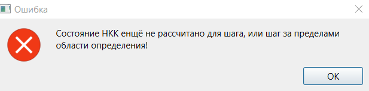

1. FCM simulation is performed on the simulation tab. To switch to this tab from another tab, click the "Simulation" header.
2. The left side of the tab contains an interactive graphical representation of the FCM. This area always behaves like the value editing mode of the graph tab. Zoom is controlled by interface elements in the lower-right corner.
3. The area on the right side of the tab is used to set FCM forecasting and simulation parameters. During forecasting, concept values always change. Depending on the selected forecasting algorithm, weight values may change as well. Forecasting can be performed using either numeric values or fuzzy term values. The following activation functions are available: bivalent, trivalent, threshold-linear, sigmoid, and hyperbolic tangent.
4. Simulation stop conditions can be specified in the following forms:
4.1. Forecasting for a fixed number of steps.
4.2. Forecasting until, for the specified number of steps, the selected metric of FCM state change becomes smaller than the specified threshold.
5. The change metric is specified in any case. This is necessary so that the application can display its value at each step in the lower-right corner.
6. The application can simulate either in real time or immediately jump to the final state according to the user settings. In addition, before the simulation starts, the user can set the number of steps per second to be shown by the application.
7. To start the simulation, click the "Predict" button. During simulation, concept colors and, if the selected algorithm supports it, weight colors change according to the predicted values. A progress bar at the bottom of the tab shows the current simulation step.
8. To view how a concept value changes during forecasting, right-click the concept. This opens the simulation results tab of the concept window, which shows a graph of concept value changes relative to the specified term values. Changes for an individual weight can be viewed in the same way. These graphs are updated dynamically during simulation.
9. The simulation speed can be changed while the simulation is running. Clicking "Slow down" halves the speed. Clicking "Speed up" doubles the speed. Changes in forecasting speed are shown in the corresponding field. The simulation can be paused using the "Pause" button and started again using the same button, which then has the label "Start". After completion, the simulation is paused automatically. By using the "Finish" button, the user can jump directly to the last simulation step, and by using the "Cancel" button, return to the initial state.
10. If the simulation is paused, you can move by the specified number of steps in the selected direction using the "Back" and "Forward" buttons. If the required step has not yet been predicted, or if it is outside the range of steps available according to the stop conditions, an error message is shown and the transition is not performed.

11. After the simulation is completed, the state can be reset to its initial state, that is, the state before simulation start, using the "Reset" button. If FCM parameters were changed after the simulation started, those changes appear again on the interactive area after the reset.
12. This tab also allows editing FCM notes in the same way as on the model settings tab. The notes field on the model settings tab and the notes field on the simulation tab display the same content.